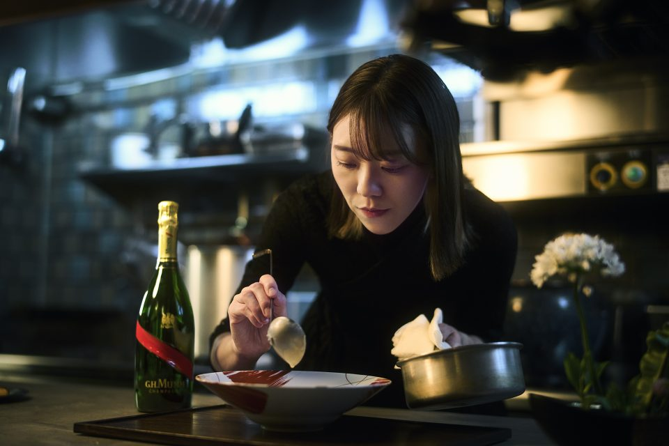

- Yoko Shujimura
Yoko's Kitchen was founded by Yoko Shujimura, a passionate cooking
instructor who believes that anyone can learn to prepare delicious
Japanese food. What started as a small hobby has grown into a place
where people can learn, experiment and enjoy cooking together.
During the courses, students learn traditional techniques, ingredient
preparation and the cultural background behind many popular Japanese
dishes. Every lesson focuses on practical skills that can be used at
home regardless of previous experience.
The goal of Yoko's Kitchen is simple: create a friendly environment
where learning is enjoyable and where students leave each class with
new skills, confidence and a few great recipes to try on their own.